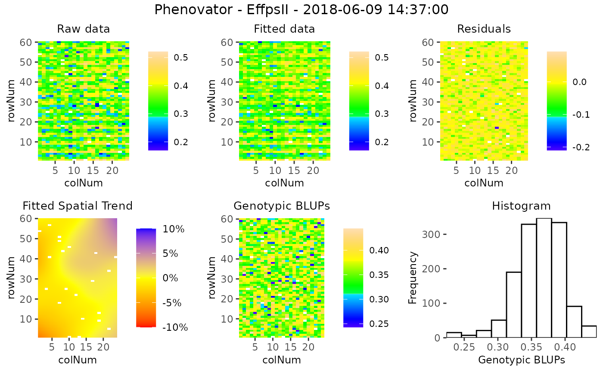

Plotting function for objects of class fitMod. Seven different types
of plots can be made for an object of class fitMod. A detailed
description and optional extra parameters for the different plots is given
in the sections below.
Arguments
- x
An object of class fitMod.
- ...
Extra plot options. Described per plotType in their respective section.
- plotType
A single character string indicating which plot should be made. See the sections below for a detailed explanation of the plots.
- timePoints
A character or numeric vector indicating the time points to be plotted. When using a character string to reference a time point, the value has to be an exact match to one of the existing timePoints. When using a number it will be matched by its number ("timeNumber") in the timePoints attribute of the TP object.
- title
A character string used as title for the plot. If
NULLa default title is added to the plot depending onplotType.- output
Should the plot be output to the current device? If
FALSEonly a (list of) ggplot object(s) is invisibly returned. Ignored ifoutFileis specified.- outFile
A character string indicating the .pdf file or .gif file (for
plotType= "timeLapse") to which the plots should be written.- outFileOpts
A named list of extra options for the pdf outfile, e.g. width and height. See
pdffor all possible options.
Value
Depending on the plot type either a ggplot object or a list of ggplot objects is invisibly returned.
rawPred plot
Plots the raw data (colored dots) overlayed with the predicted values from
the fitted model (black dots). For each genotype a plot is made per
plot/plant over time. These plots are put together in a 5x5 grid. By using
the parameter genotypes a selection of genotypes can be plotted.
Extra parameter options:
- genotypes
A character vector indicating the genotypes to be plotted.
- plotChecks
Should the check genotypes be included in the plot?
- plotLine
Should the data be displayed as lines? Default is
FALSE.
corrPred plot
Plots the spatially corrected data (colored dots) overlayed with the
predicted values from the fitted model (black dors). For each genotype a plot
is made per plot/plant over time. These plots are put together in a 5x5 grid.
By using the parameter genotypes a selection of genotypes can be
plotted. Extra parameter options:
- genotypes
A character vector indicating the genotypes to be plotted.
- plotChecks
Should the check genotypes be included in the plot?
- plotLine
Should the data be displayed as lines? Default is
FALSE.
herit plot
Plots the heritability over time. This plot is only available when genotype
is fitted as random factor in the model. If geno.decomp is used when
fitting the model, heritabilities are plotted for each level of geno.decomp
in a single plot. Extra parameter options:
- yLim
A numerical vector of length two, used for setting the limits of the y-axis of the plot. If values outside of the plotting range are given, then these are ignored.
effDim plot
Plots the effective dimension over time for models fitted using SpATS. Extra parameter options:
- whichED
A character vector indicating which effective dimensions should be plotted. This should be a subset of "colId", "rowId", "fCol", "fRow", "fColRow", "colfRow", "fColfRow" and "surface". When
useRepId = TRUE, the effective dimensions of "colId" and "rowId" become "RepId:colId" and "RepId:rowId". Default all effective dimensions are plotted.- EDType
A character string specifying if the effective dimension ("dimension") or the ratio of effective dimensions ("ratio") should be plotted. Default the dimensions are plotted.
- yLim
A numerical vector of length two, used for setting the limits of the y-axis of the plot. If values outside of the plotting range are given, then these are ignored.
variance plot
Plots the residual, column and row variances over time for the fitted models. Extra parameter options:
- yLim
A numerical vector of length two, used for setting the limits of the y-axis of the plot. If values outside of the plotting range are given, then these are ignored.
spatial plot
Creates five plots per time point, spatial plots of the raw data, fitted values, residuals and either BLUEs or BLUPs, and a histogram of the BLUEs or BLUPs. When SpATS was used for modeling an extra plot with the fitted spatial trend is included Extra parameter options:
- spaTrend
A character string indicating how the spatial trend should be displayed. Either "raw" for raw values, or "percentage" for displaying as a percentage of the original phenotypic values.
See also
Other functions for spatial modeling:
fitModels(),
getCorrected(),
getEffDims(),
getGenoPred(),
getHerit(),
getVar(),
summary.fitMod()
Examples
# \donttest{
## Using the first example dataset (PhenovatorDat1):
## Create an object of class TP.
phenoTP <- createTimePoints(dat = PhenovatorDat1,
experimentName = "Phenovator",
genotype = "Genotype",
timePoint = "timepoints",
repId = "Replicate",
plotId = "pos",
rowNum = "y", colNum = "x",
addCheck = TRUE,
checkGenotypes = c("check1", "check2",
"check3", "check4"))
#> Warning: The following plotIds have observations for less than 50% of the time points:
#> c24r41, c7r18, c7r49
## Fit a SpATS model on three points:
modPhenoSp <- fitModels(TP = phenoTP,
trait = "EffpsII",
timePoints = c(1, 6, 36))
#> 2018-05-31 16:37:00
#> 2018-06-02 09:07:00
#> 2018-06-09 14:37:00
## Plot the spatial trends for one time point:
plot(modPhenoSp,
timePoints = 36,
plotType = "spatial",
spaTrend = "percentage")

# }
if (FALSE) { # \dontrun{
## Create a time lapse of all available time points:
plot(modPhenoSp,
plotType = "timeLapse",
outFile = "TimeLapse_modPhenoSp.gif")
} # }
# \donttest{
## Plot the corrected values for a subset of four genotypes:
plot(modPhenoSp,
plotType = "corrPred",
genotypes = c("check1", "check2", "G007", "G058") )
## Plot the effective dimensions of all available time points in the model
## for a subset of effective dimensions:
plot(modPhenoSp,
plotType = "effDim",
whichED = c("colId", "rowId", "fColRow","colfRow"),
EDType = "ratio")
# }